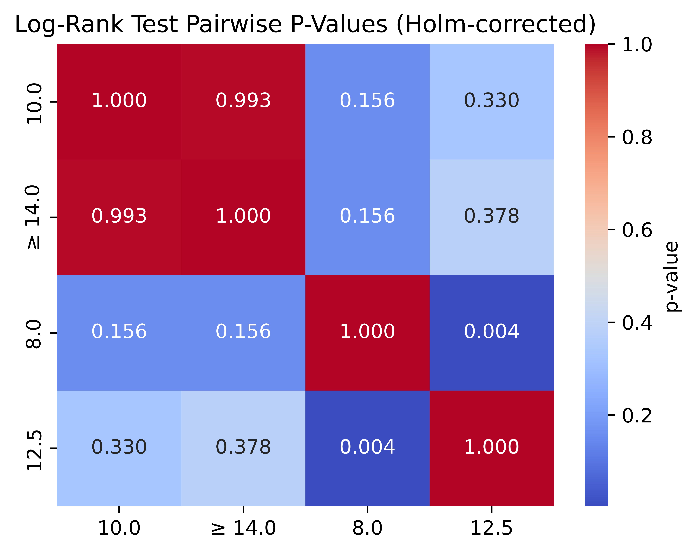

Clinical Data Analysis
Analysis of paediatric haemodialysis catheter data
Overview
Analysed paediatric haemodialysis catheter data using Python, combining data processing, statistical analysis, survival analysis and visualisation.
The work contributed to the assessment of catheter clinical performance and microstructural characteristics across multiple UK centres.
```
Published work
Clinical performance and microstructural assessment of haemodialysis catheters for children on maintenance dialysis.
View publication ↗ ```
Clinical performance and microstructural assessment of haemodialysis catheters for children on maintenance dialysis.
View publication ↗ ```
What I did
Data cleaning and preparation, statistical testing, survival analysis and visualisation were performed in Python to investigate catheter performance and related clinical data.
Figures & Visualisation

```

Data visualisation.
Statistical analysis.
```

Tools
Python · pandas · statistical analysis · survival analysis · visualisation